Fuzzing TIPC protocol implementation in Linux with Syzkaller
This post describes my first experience fuzzing the Linux kernel with syzkaller, in particular its implementation of a rather obscure protocol, TIPC. It was also a good opportunity to explore the kernel internals in bigger detail. While diving into the specification of the TIPC protocol, I carried out experiments in parallel by bringing up TIPC nodes on a local and a virtual machine to simulate a cluster whose nodes communicate via this protocol.
On each node the tipc utilities allow you to configure and examine node identifier and its hash, cluster identifier, connectivity state, address table, the underlying transport protocol (UDP, Ethernet, or the Infiniband protocol used in HPC clusters), and various other parameters.
The /sys filesystem also exposes information from the TIPC kernel module, for example the symbols used in the kernel’s symbol table. In addition, parts of the Linux kernel source that output protocol information to the pseudo‑filesystem /proc (specifically /proc/net/protocols) can be directly seen in the source[18].
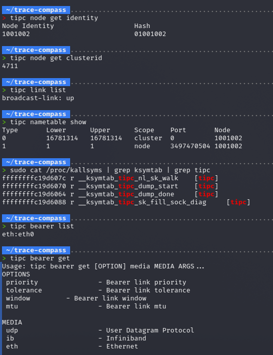
In the kernel’s ring buffer (viewable with dmesg) we can see service messages related to loading the TIPC module via modprobe. Notably, the module starts in single-node mode.
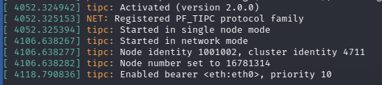
To understand how TIPC nodes exchange messages, it makes sense to capture packets with e.g. Wireshark.
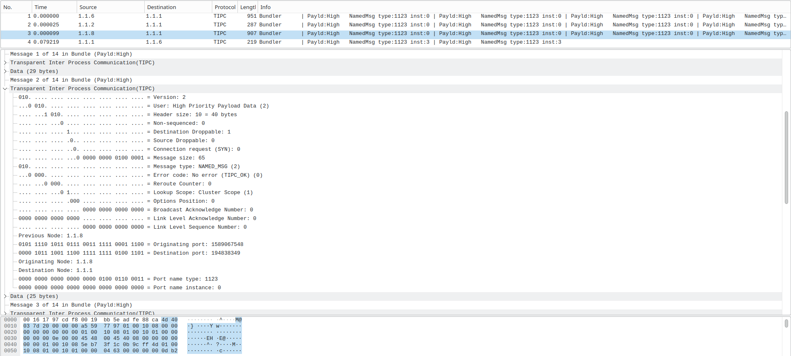
The captured traffic shows Link-State information, node addresses, transport protocols, header and payload sizes, priorities, and other fields defined by the protocol specification. Also, the the Ethertype for TIPC, which is 0x88ca.
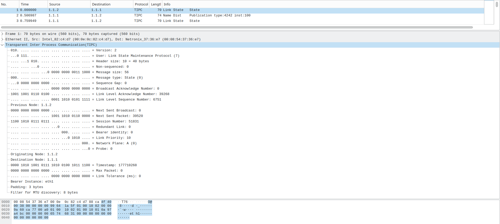
To use TIPC in a Linux kernel that will run inside virtual machine images for fuzzing, the kernel must be compiled with the following options:
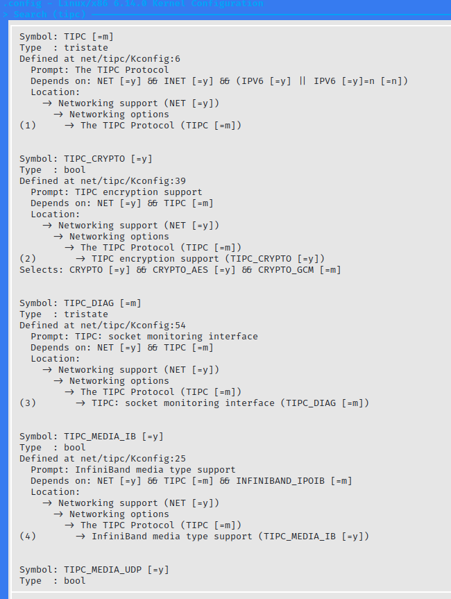
For syzkaller to function properly, it's also necessary to include CONFIG_KCOV, CONFIG_DEBUG_INFO_DWARF4, CONFIG_KASAN, CONFIG_KASAN_INLINE,
CONFIG_CONFIGFS_FS, and CONFIG_SECURITYFS in the kernel build. These are the minimum configs required to collect coverage and detect memory safety errors.
Also we need CONFIG_TUN and CONFIG_TAP to support virtual TUN/TAP adapters to emulate packets arriving from an external network. It's worth noting that for TIPC,
as a cluster communication protocol, it's important to have multiple nodes that communicate realistically within a cluster.
This requires either configuring the cluster itself or using TUN/TAP to trick the fuzzer into thinking packets are coming from other nodes externally.
I also tried adding other debugging options, in particular CONFIG_NAMESPACES, CONFIG_UTS_NS, CONFIG_IPC_NS, CONFIG_PID_NS, CONFIG_NET_NS, CONFIG_MEMCG,
CONFIG_CGROUP_PIDS for isolation, CONFIG_KALLSYMS and CONFIG_KALLSYMS_ALL for better detection of enabled system calls and kernel bitness, CONFIG_DEBUG_KMEMLEAK
for finding memory leaks using the Kernel Memory Leak Detector, CONFIG_FAULT_INJECTION category configurations and CONFIG_FAIL_* for fault injection testing.
It's worth noting that some Linux kernel sanitizers (besides KASAN and UBSAN) are mutually exclusive (for example, KCSAN and KASAN) or depend on the compiler used
(for example, KMSAN requires clang instead of gcc). Like tracing methods, sanitizers have static instrumentation points at which they are triggered,
allowing experimentation with different sanitizers depending on the type of error we wish to detect.
Incidentally, this research was also a good opportunity to explore the Linux kernel's tracing and debugging capabilities using mechanisms such as eBPF and tools such as
pwndbg, lttng, and trace-compass to gain a more detailed understanding of the network subsystem, particularly how the kernel processes network packets.
Over the course of my tests I tried various setups: different Linux distributions, Docker, nested virtualization (VMware, VirtualBox), and custom images built with Buildroot. Ultimately I decided to use a Debian-based distro as the base distribution because syzkaller expects a Filesystem Hierarchy Standard-compliant system, which simplifies deployment, and I just happened to complicate things by trying to make it work on Guix :D.
I used Debian images for QEMU for VMs, each booting the custom-built kernel for fuzzing. Initially I stumbled on some issues with SELinux policies and external access to the VM images but resolved them, so that syzkaller managed to launch the VMs automatically via syz-manager.
Below is the .cfg file (placed in the root of syzkaller directory) for fuzzing TIPC:
{
"target": "linux/amd64",
"http": "127.0.0.1:56741",
"workdir": "~/syzkaller/workdir",
"kernel_obj": "~/linux/",
"image": "~/debianimage/buster.img",
"sshkey": "~/debianimage/buster.id_rsa",
"syzkaller": "~/syzkaller",
"enable_syscalls": [
"socket$tipc",
"socketpair$tipc",
"bind$tipc",
"connect$tipc",
"accept4$tipc",
"getsockname$tipc",
"getpeername$tipc",
"sendmsg$tipc",
"ioctl$SIOCGETLINKNAME",
"ioctl$SIOCGETNODEID",
"setsockopt$TIPC_IMPORTANCE",
"setsockopt$TIPC_SRC_DROPPABLE",
"setsockopt$TIPC_DEST_DROPPABLE",
"setsockopt$TIPC_CONN_TIMEOUT",
"setsockopt$TIPC_MCAST_BROADCAST",
"setsockopt$TIPC_MCAST_REPLICAST",
"setsockopt$TIPC_GROUP_LEAVE",
"setsockopt$TIPC_GROUP_JOIN",
"getsockopt$TIPC_IMPORTANCE",
"getsockopt$TIPC_SRC_DROPPABLE",
"getsockopt$TIPC_DEST_DROPPABLE",
"getsockopt$TIPC_CONN_TIMEOUT",
"getsockopt$TIPC_NODE_RECVQ_DEPTH",
"getsockopt$TIPC_SOCK_RECVQ_DEPTH",
"getsockopt$TIPC_GROUP_JOIN",
"sendmsg$TIPC_CMD_SET_LINK_TOL",
"sendmsg$TIPC_CMD_SET_LINK_PRI",
"sendmsg$TIPC_CMD_SET_LINK_WINDOW",
"sendmsg$TIPC_CMD_ENABLE_BEARER",
"sendmsg$TIPC_CMD_GET_BEARER_NAMES",
"sendmsg$TIPC_CMD_GET_MEDIA_NAMES",
"sendmsg$TIPC_CMD_SHOW_PORTS",
"sendmsg$TIPC_CMD_GET_REMOTE_MNG",
"sendmsg$TIPC_CMD_GET_MAX_PORTS",
"sendmsg$TIPC_CMD_GET_NETID",
"sendmsg$TIPC_CMD_GET_NODES",
"sendmsg$TIPC_CMD_GET_LINKS",
"sendmsg$TIPC_CMD_SET_NODE_ADDR",
"sendmsg$TIPC_CMD_SHOW_NAME_TABLE",
"sendmsg$TIPC_CMD_SHOW_LINK_STATS",
"sendmsg$TIPC_CMD_GET_MEDIA_NAMES",
"sendmsg$TIPC_CMD_DISABLE_BEARER",
"sendmsg$TIPC_CMD_RESET_LINK_STATS",
"sendmsg$TIPC_CMD_SET_NETID",
"socket$nl_generic",
"syz_genetlink_get_family_id$tipc",
"recvmsg$tipc",
"shutdown$tipc",
"syz_genetlink_get_family_id$tipc2",
"sendmsg$TIPC_NL_BEARER_DISABLE",
"sendmsg$TIPC_NL_BEARER_ENABLE",
"sendmsg$TIPC_NL_BEARER_GET",
"sendmsg$TIPC_NL_BEARER_ADD",
"sendmsg$TIPC_NL_BEARER_SET",
"sendmsg$TIPC_NL_SOCK_GET",
"sendmsg$TIPC_NL_PUBL_GET",
"sendmsg$TIPC_NL_LINK_GET",
"sendmsg$TIPC_NL_LINK_SET",
"sendmsg$TIPC_NL_LINK_RESET_STATS",
"sendmsg$TIPC_NL_MEDIA_GET",
"sendmsg$TIPC_NL_MEDIA_SET",
"sendmsg$TIPC_NL_NODE_GET",
"sendmsg$TIPC_NL_NET_GET",
"sendmsg$TIPC_NL_NET_SET",
"sendmsg$TIPC_NL_NAME_TABLE_GET",
"sendmsg$TIPC_NL_MON_SET",
"sendmsg$TIPC_NL_MON_GET",
"sendmsg$TIPC_NL_MON_PEER_GET",
"sendmsg$TIPC_NL_PEER_REMOVE",
"sendmsg$TIPC_NL_UDP_GET_REMOTEIP",
"sendmsg$TIPC_NL_KEY_SET",
"sendmsg$TIPC_NL_KEY_FLUSH"
],
"procs": 8,
"type": "qemu",
"vm": {
"count": 4,
"kernel": "~/linux/arch/x86/boot/bzImage",
"cmdline": "net.ifnames=0",
"qemu_args": "-s -S",
"network_device": "virtio-net",
"cpu": 2,
"mem": 2048
}
}
After starting the fuzzing process, the web UI at 127.0.0.1:56741 shows continuously updated information about syzkaller’s activity.
System calls and generated programs appear in the console where syz-manager runs (especially with high verbosity -vv 3 and -debug).
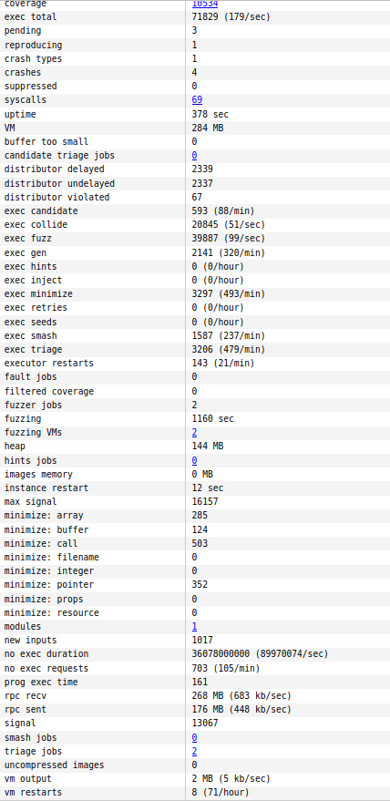
The local web interface displays coverage data for various kernel parts, including the TIPC subsystem.
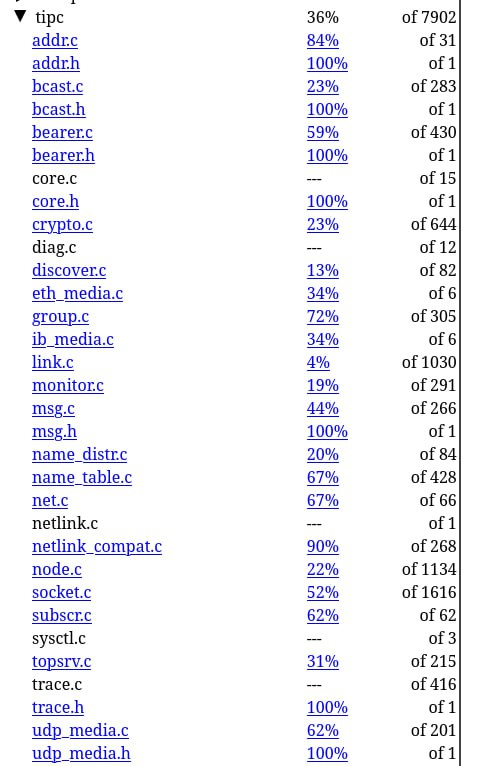
Coverage reports per source file indicate which lines are fully, partially, or not covered.
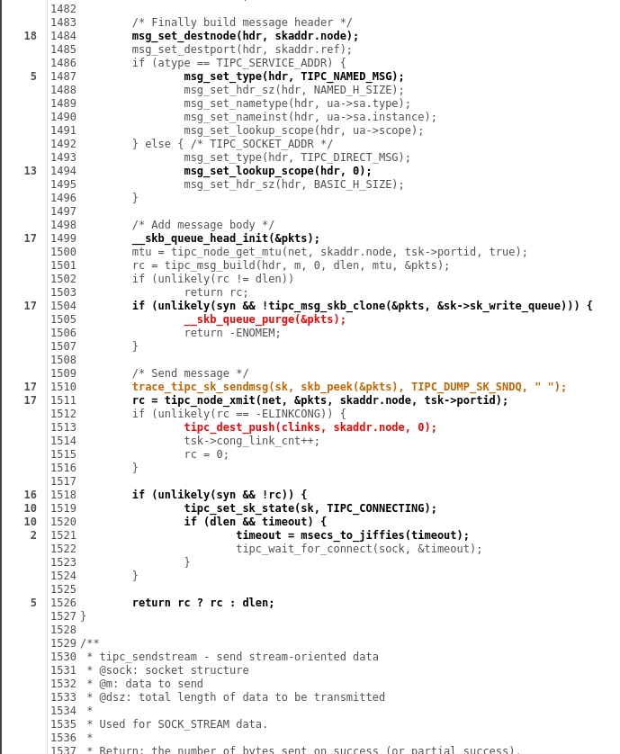
Although instrumentation points are inserted after compiler optimizations (so reports are not perfect), they are invaluable for iteratively refining the fuzzer. As coverage grows, syzkaller produces more complex programs and syscall combinations, which we can see in syzkaller's reports.
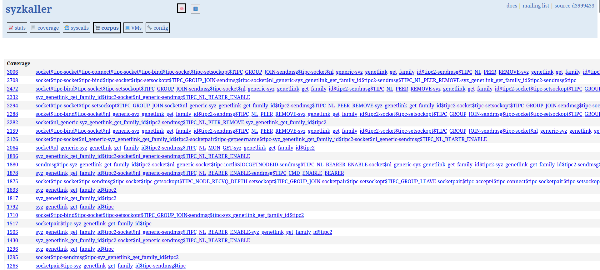
The UI also shows how often each enabled syscall appears in the generated programs. This helps identify which calls are exercised most frequently and which may need additional attention.
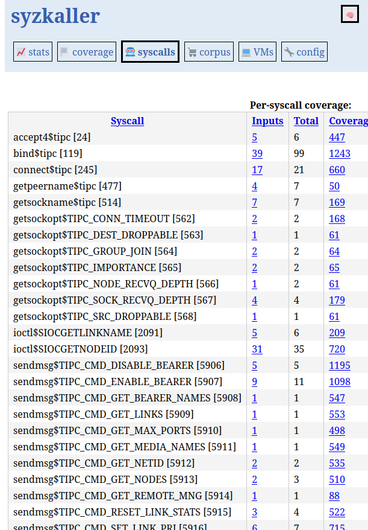
Below is an example program generated from syzlang descriptions
r0 = socket$nl_generic(0x10, 0x3, 0x10)
r1 = socket$nl_generic(0x10, 0x3, 0x10)
ioctl$SIOCGETLINKNAME(r1, 0x89e0, &(0x7f0000000000)={0x1, 0x3})
r2 = syz_genetlink_get_family_id$tipc2(&(0x7f00000004c0), 0xffffffffffffffff)
sendmsg$TIPC_NL_PEER_REMOVE(r0, &(0x7f0000001f80)={0x0, 0x0, &(0x7f0000001f40)={&
(0x7f0000001b80)={0x20, r2, 0x421, 0x70bd29, 0x25dfdbfb, {}, [@TIPC_NLA_NET={0xc,
0x7, 0x0, 0x1, [@TIPC_NLA_NET_ADDR={0x8}]}]}, 0x20}, 0x1, 0x0, 0x0, 0x20000000},
0x40e0)
r3 = syz_genetlink_get_family_id$tipc2(&(0x7f0000000040), 0xffffffffffffffff)
r4 = socket$nl_generic(0x10, 0x3, 0x10)
r5 = syz_genetlink_get_family_id$tipc2(&(0x7f0000000100), 0xffffffffffffffff)
r6 = socket$nl_generic(0x10, 0x3, 0x10)
sendmsg$TIPC_NL_PUBL_GET(r6, &(0x7f0000000200)={0x0, 0x0, &(0x7f0000000040)={&(0x
7f0000000240)={0x18, r5, 0x711, 0x70bd26, 0x25dfdbff, {}, [@TIPC_NLA_SOCK={0x4}]}
, 0x18}, 0x1, 0x0, 0x0, 0x2000c001}, 0x40040844)
sendmsg$TIPC_NL_UDP_GET_REMOTEIP(r4, &(0x7f0000000440)={0x0, 0x0, &(0x7f000000040
0)={&(0x7f0000000000)={0x28, r3, 0xe5c6bd9155b89775, 0x70bd26, 0x25dfdbfd, {}, [@
TIPC_NLA_BEARER={0x14, 0x1, 0x0, 0x1, [@TIPC_NLA_BEARER_NAME={0x10, 0x1, @l2={'et
h', 0x3a, 'syz_tun\x00'}}]}]}, 0x28}, 0x1, 0x0, 0x0, 0x80}, 0x20000004)
sendmsg$tipc(0xffffffffffffffff, 0x0, 0x4)
r7 = socket$nl_generic(0x10, 0x3, 0x10)
ioctl$SIOCGETLINKNAME(r7, 0x89e0, &(0x7f0000000000)={0x1, 0x3})
socket$nl_generic(0x10, 0x3, 0x10)
r8 = syz_genetlink_get_family_id$tipc2(&(0x7f0000000140), 0xffffffffffffffff)
r9 = socket$nl_generic(0x10, 0x3, 0x10)
sendmsg$TIPC_NL_MON_SET(r9, &(0x7f00000026c0)={0x0, 0x0, &(0x7f0000002680)={&(0x7
f0000000080)=ANY=[@ANYBLOB="0aa970696c4b05174e9ba2680000005b4a9eae969143a740c84f4
a7988f70944aaa43c12c81015b79df935c06ef47a03000000000000028f2bb2f5", @ANYRES16=r8,
@ANYBLOB="010029bd7000fddbdf25110000000c0009800800010080f46d41"], 0x20}}, 0x0)
sendmsg$tipc(0xffffffffffffffff, 0x0, 0x8004)
(Actually, it would be nice to make proper syntax highlighting for syzlang, but that's a task for another time)
From syzkaller's perspective, a program is a set of system calls, possibly
connected by resources passed to each other. The arguments of system calls are filled with random values corresponding to their types.
If a kernel error is triggered during fuzzing, syzkaller produces a log and report containing the executed commands, information about the stack state,
registers, sanitizer operation, possible use of fault injection methods (if this option was enabled during the Linux kernel build), the likely section of assembly code that
triggered the error, and other debugging information. The figures below show one such report for the error general protection fault in tipc_udp_nl_dump_remoteip, obtained during fuzzing.
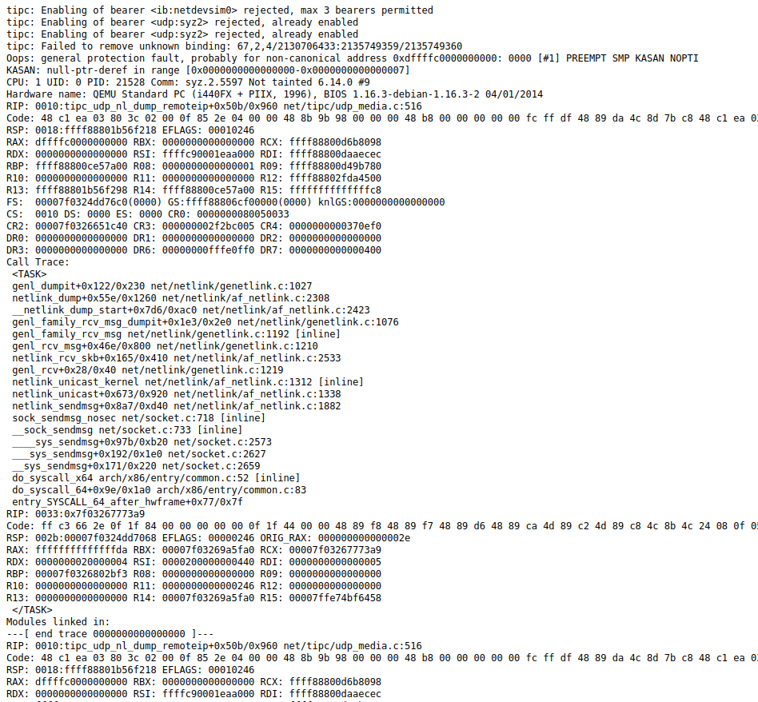
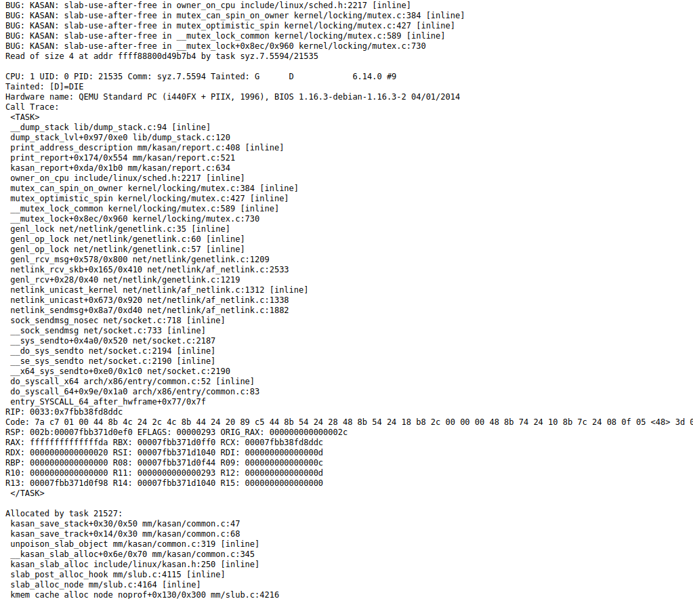
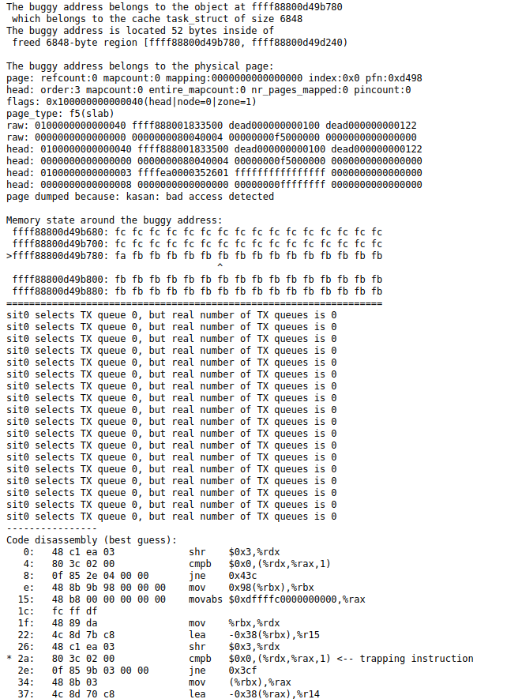
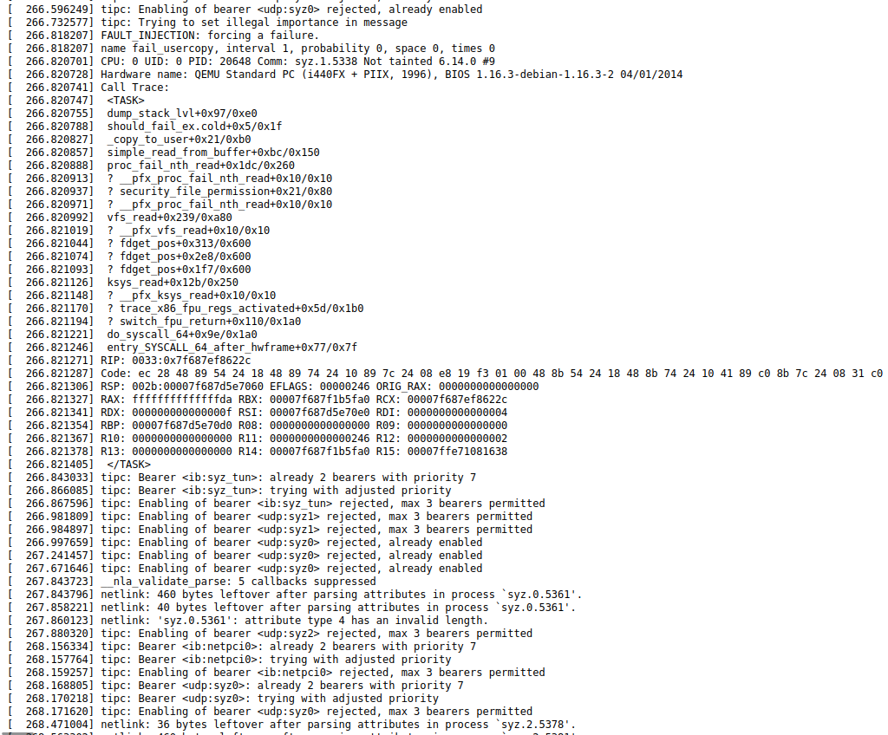
These reports, as well as bug reproductions, are used to reproduce the bug triggered by the fuzzer and subsequently fix it. When possible, syzkaller can generate a bug reproducer not only in its own programming language, syzlang, but also in C, making its analysis more readable. To expand the fuzzer's coverage of the TIPC protocol, I analyzed the source code of the TIPC implementation in the Linux kernel, identifying the main functions, data types, and header files used. Subsequently I tried to understand how the Linux source code relates to existing syzlang definitions, and tried adding some new system calls. In particular, a number of definitions for netlink were missing, as well as messages that can be received externally in reply. Some operations are not supported at the kernel level for this socket type. The Linux code has different structures for different socket types (netlink, packet, stream). I also found several sections of the TIPC implementation source code in Linux marked as FIXME (meaning they require correction by the kernel developers), which possibly affect the effectiveness of the fuzzer's coverage of this protocol[19]. Incidentally, it also seems that there're some things in the Linux implementation of TIPC that are absent in the protocol specification, for example, pretty much everything related to cryptography. Below are some of the syzkaller definitions, with some added during the analysis.
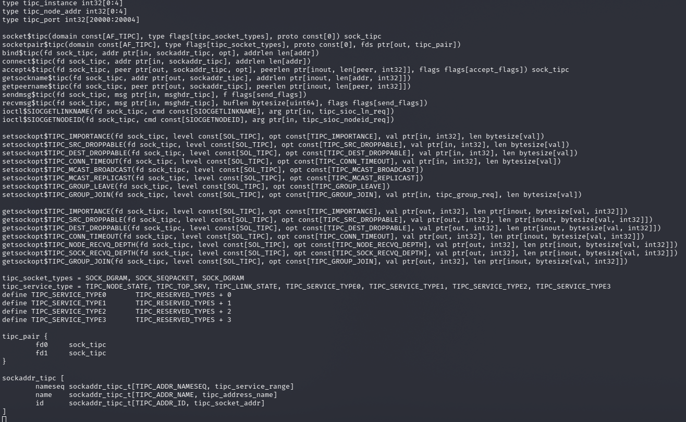
After adding new definitions, we need to use `make extract` to extract the constants, `make generate`, and `make` to rebuild the binaries with the new
definitions. During this process I encountered several difficulties with syz-extract (called via `make extract TARGETOS=linux SOURCEDIR=$KSRC`, where KSRC is the
kernel source directory), so I used a "manual" method to inject the new definitions into the fuzzer. During normal operation, the syz-extractor utility
generates a .const file containing constants and system calls (marked as __NR_ in accordance with Linux kernel development conventions) extracted from the .txt definitions,
and numerical values assigned to them according to a specific rule (for syscalls, it's their numbers, for other constants the numbers are from the kernel source "define"s).
I manually wrote new definitions into .const in order to work around problems when using the syz-extract utility.
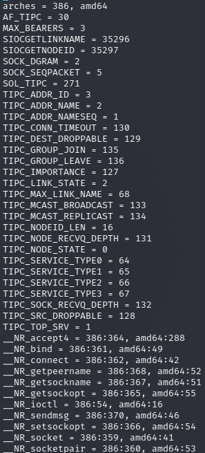
After adding new definitions and rebuilding the fuzzer, the process can be run again, iteratively adding or removing the necessary system calls and pseudo-system calls available in syzkaller, thus controlling which areas of code will be covered during fuzzing, allowing us to find bugs in specific functionality of Linux kernel subsystems.
References
- Linux Kernel Module Programming Guide lkmpg
- Linux Kernel Teaching linux‑kernel‑labs
- Development tools for the kernel kernel.org dev‑tools
- Linux network performance parameters github.com linux‑network‑performance‑parameters
- Wüstrich L., Stephan A. The Path of a Packet Through the Linux Kernel School of Computation, Information and Technology, Technical University of Munich, Germany – 2023 TUM paper
- Network performance in the Linux kernel FOSDEM 2021 slides
- In the kernel trenches: Mastering Ethernet drivers on Linux Bootlin 2024 PDF
- Linux debugging, profiling and tracing training Bootlin debugging slides
- Transparent Inter Process Communication Protocol tipc.io protocol
- Linux kernel source tree – TIPC subsystem git.kernel.org net/tipc
- Ruffling the penguin! How to fuzz Linux kernel hackmag.com Linux‑fuzzing
- Looking for remote code execution bugs in the Linux kernel xairy.io Syzkaller external network
- Syzkaller – kernel fuzzer documentation github.com syzkaller docs
- ZDI-24-821: A Remote UAF in the kernel’s net/tipc sam4k.com ZDI‑24‑821
- Love R. Linux Kernel Development, 3rd ed. – Addison‑Wesley, 2010.
- Benvenuti C. Understanding Linux Network Internals – O’Reilly, 2005.
- Kerrisk M. The Linux Programming Interface: A Linux and UNIX System Programming Handbook – No Starch Press, 2010.
- Elixir Cross Referencer – source line 4194 in `sock.c` (v6.14-rc6) elixir.bootlin.com sock.c#L4194
- Linux kernel source tree – FIXME occurrences in the TIPC code GitHub search FIXME in net/tipc